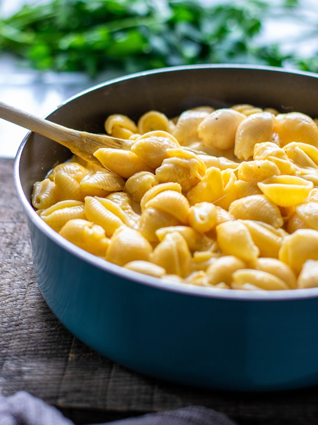

Mac & Cheese

Description
This slow cooker mac and cheese is creamy, comforting, and takes just moments to assemble in a slow cooker.
Great for large family gatherings and to take to potluck dinners. It's always a big hit!
Ingredients:
- 1 (16 ounce) package elbow macaroni
- ½ cup butter
- Salt and ground black pepper to taste
- 1 (16 ounce) package shredded Cheddar cheese, divided
- 1 (5 ounce) can evaporated milk
- 2 large eggs, well beaten
- 2 cups whole milk
- 1 (10.5 ounce) can condensed Cheddar cheese soup (such as Campbell's)
- 1 pinch paprika, or as desired (Optional)
Steps:
- Gather all your ingredients
-
Fill a large pot with lightly salted water and bring to a rolling boil. Stir in macaroni pasta and return to a boil.
Cook pasta uncovered, stirring occasionally, until tender yet firm to the bite, about 8 minutes. Drain and transfer pasta to a slow cooker.
-
-
Stir butter into pasta until melted; season with salt and black pepper. Sprinkle about ½ Cheddar cheese over pasta; stir.
-
Whisk evaporated milk and eggs together in a bowl until smooth; stir into pasta mixture.
-
Whisk whole milk and condensed soup together in a bowl until smooth; stir into pasta mixture.
-
Sprinkle remaining ½ Cheddar cheese over pasta mixture; sprinkle with paprika.
-
Cook on Low for 3 hours, checking the edges are not getting too brown after 2 ½ hours.
-
Serve hot and enjoy!
Home